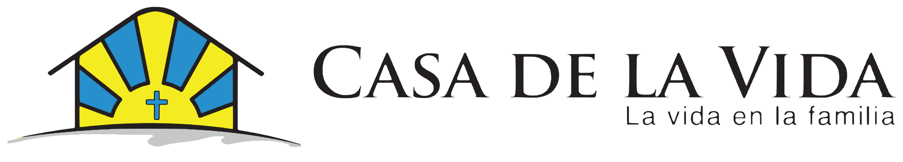

Ayúdanos a completar la nueva página web
Estamos renovando la web de la Casa de la Vida para que una madre encuentre ayuda en segundos. Gracias por las respuestas que ya enviaron: aquí quedan solo las preguntas que todavía faltan.
Toma de 5 a 10 minutos. Elige tu área, responde solo lo que sepas y envíalo. Si no sabes algo, déjalo en blanco o escribe quién lo sabe.
Antes de empezar
No escribas contraseñas ni datos de madres o pacientes. Las claves se entregan aparte, por llamada.
Esta página no guarda tus respuestas en ningún servidor. Se quedan en tu teléfono hasta que tú las envías a Paola por WhatsApp o por correo.
Puedes responder más de una, de una en una.
Enviar mis respuestas
Revisa el resumen y envíalo a Paola. Puedes volver luego y responder otra área.
Si tienes fotos o documentos (el logo original, fotos recientes, el afiche del Bingo), envíalos a Paola por WhatsApp indicando el código de la pregunta.